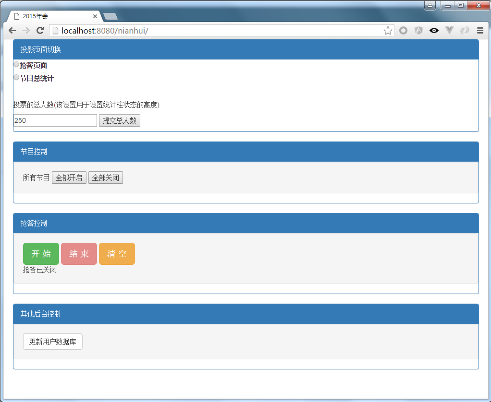

2015年会¶
需求¶
2015年年会，hr要求利用微信与员工互动，包括利用微信对节目进行评论，利用微信抢答主持人问题。
主要页面有：
- 需要投影到大屏幕的有：节目表演的评论和得分页面，微信抢答结果页面。
- 需要在微信公众号（服务号）显示节目介绍，节目开始后，允许员工对节目点赞和评论。
- 总的控制后台。
截图为：控制后台
过程描述¶
入职三月，终于迎来了属于自己的第一个项目，至今印象深刻。此项目只在年会上用一次，但是难度并不小，牵涉大量微信接口，前端逻辑也比较复杂，唯一不用考虑的就是 可维护性 。
初生牛犊不怕虎，我花费一周的时间搞定了微信接口，以为离胜利不远了。后来遇到了各种问题，例如微信的昵称，moji表情等特殊字符不能安全的保存在mysql5.5中，人员抢答并发同步等等问题。
经过近一个月的努力，我与一位前端妹子配合，圆满的完成了任务。
经过这个项目的历练，我掌握了利用nginx和uwsgi在linux服务器上部署应用，将Angularjs应用到了实践中，坚定了我使用先进前端框架的信心，弄懂了Auth2.0的原理。